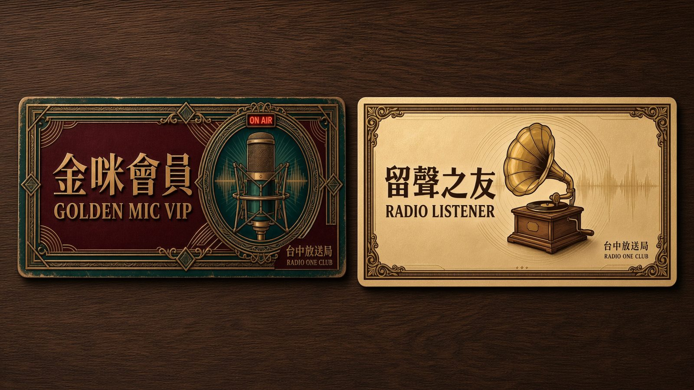
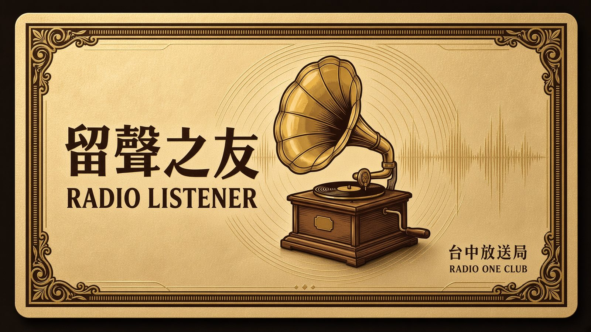
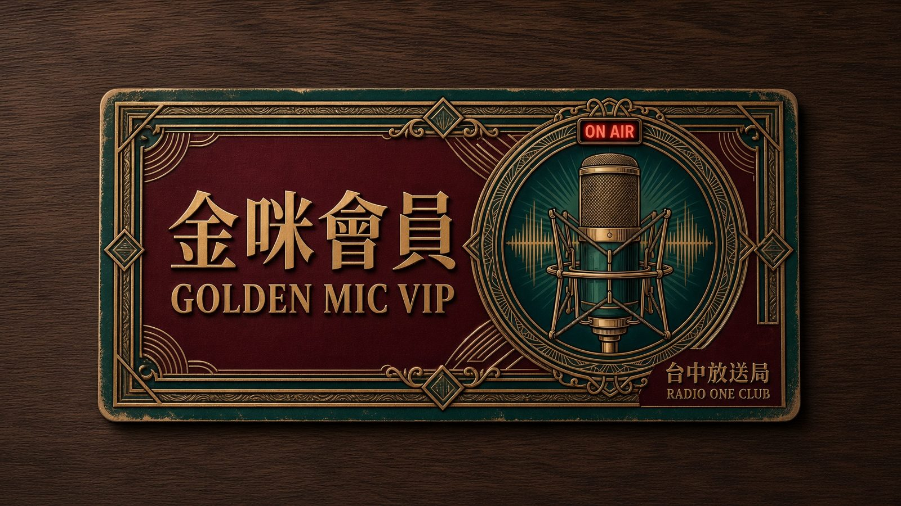

07 · Radio One Club
一張通往台中音樂生活圈的
文化身分證
Radio One Club · Membership
以電台街 1 號命名的會員俱樂部。免費加入就有折扣，常來的人值得更好的位置。
級距
兩種身分，一樣被好好招待

留聲之友
免費LINE 官方帳號綁定即生效。第一次來放送局的你，從這裡開始。
- 線上購票 95 折
- 每買 1 張票累積 1 點電波點數，集 10 點換 1 張講唱會門票
- 生日月份進館獲贈生日飲品券＋當月講唱會 75 折生日券
WELCOME GIFTCafé／合作飲品 50 元折價券 ×1 ＋ 線上購票 95 折代碼

金咪會員
NT$500 / 年年度購票滿 NT$2,500 自動免費升等。給愛樂發燒友與廣播老粉。
- 每檔講唱會 提早 48 小時會員專屬購票通道
- 購票享 85 折，每場限購 4 張，方便攜伴
- 聽歌存摺集十送一、生日 75 折券
- 推薦好友付費升等，雙方各得 NT$100 門票抵用券
- 年終「放送之夜」會員專屬私房沙龍
WELCOME GIFT付年費：講唱會門票 NT$300 抵用券 ×2、飲品 50 元折價券 ×2、購票 85 折代碼。
滿額升等：飲品 50 元折價券 ×2、購票 85 折代碼。
滿額升等：飲品 50 元折價券 ×2、購票 85 折代碼。
權益
不只來一次的理由
聽歌存摺RADIO ONE CLUB · PASSBOOK
每買 1 張音樂會門票蓋 1 格。點點看，蓋滿 10 格就能兌換一般席門票 1 張。
全勤獎學金
出席 6 場：電波年終閉門茶會年度出席滿 6 場週六講唱會，受邀參加總策展人鄭楨慶主持的閉門茶會；滿 10 場，次年金咪會員免費續約。
空中私訊
你的點歌，主持人現場唸每月選出金咪會員的心情留言與點歌故事，在週六講唱會現場 On Air。
生日禮遇
生日飲品＋75 折生日券生日當月進館即可領取。
優先通道
黃金 48 小時熱門場次開賣前兩天，會員先選位。
加入
三步驟成為會員
- 加入 LINE 官方帳號掃描館內 QR Code 或搜尋官方帳號，綁定手機即成為留聲之友。
- 領取迎新禮飲品折價券與購票優惠代碼會直接發送到 LINE。
- 升等金咪會員線上支付年費 NT$500，或年度購票累積滿 NT$2,500 自動升等。